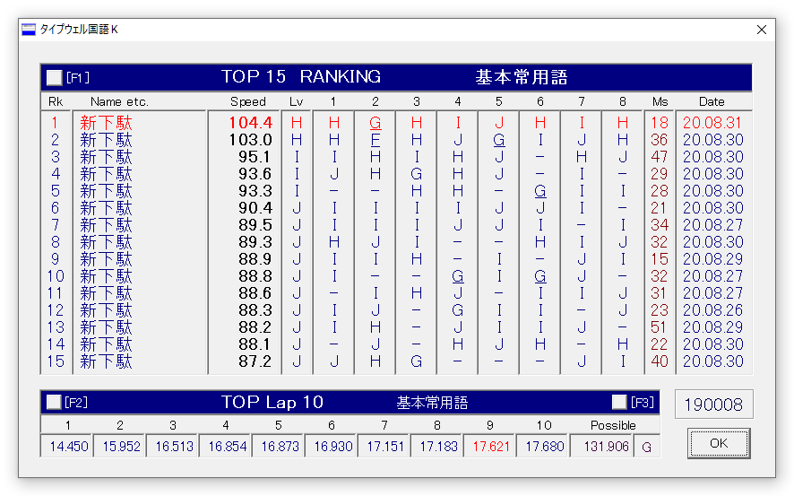
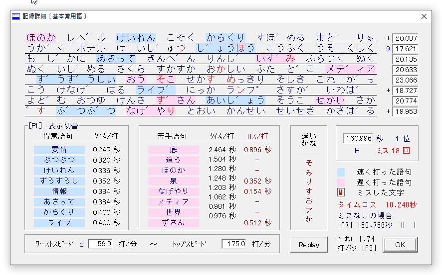

練習の成果が徐々に出てきて、タイプウェルでHは普通に出るようになってきた。これくらいスムーズに打てれば、日常のちょっとした文字入力くらいからなら置き換えていけそう。
昨日ブログを書いていても思ったのが、やっぱり普段使いすることで手に馴染んでくるだろうし、自然とミスタイプも減ってくるだろうから、常用はまだ先の予定だったけど、やはり勇気を持って現段階から常用してみることにした。
例えばPCで検索するときにもローマ字入力は使わないとか、メモ書きとかのライトな書き物など、急ぎでないタイピングから常用していこうと思う。そうやって普段から使う機会を徐々に増やしていくことで、今以上に速度があがってくれば、少しずつメッセージングとかドキュメント書きにも使っていこうかな。
ちなみに学習の進捗の感じでは、左右反転ミスが減ってきて、拗音入力の一発正解が増えてきたのもあって、ミスタイプが徐々に減ってきた。ただミスの比率的には拗音は少なくて、大半は単打も含めた普通の文字なので、まだまだ手に馴染んだというには不十分そう。
でも、拗音がパッと出てくるようになってきたのは嬉しいことで、だいぶ思考がそこで寸断されることは減ってきた。ただ出現頻度が低い「ファ」〜「フォ」や「ティ」などの外来音は、ミスが減ってはきているものの、定着にもう少し時間がかかりそうなので、たまには拗音を集中的に練習した方がいいのかもしれない。